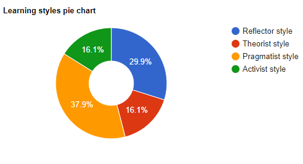

What do the test results mean to you?
The results of the tests mean to me that I am someone who loves to explore ideas and problems and is guided by practical solutions rather than unrealistic ideals. Being INTP means that I am a very logical thinker, trying out different theories and ideas, to see what works best. My creativity score also shows that I have an above average curiosity for exploring new ideas.
How do you think these results may influence your behaviour in a team?
I believe that based on my test results, I can bring valuable attributes to a team. being able to analyse problems and reach imaginative solutions, while also being open to others ideas and solutions to help create the best possible outcome. While also having my downsides to being in a team, my results show that i may be impatient with others who don’t catch up as fast as I do and sometimes forgetting others feelings when feeling strongly towards an idea, which can put team members in a position of feeling hurt or neglected.
How should you take this into account when forming a team?
When Forming a team I should be careful to make sure to be patient with all members of the team and let them all have a chance of conveying ideas. I believe that being someone that comes up with creative solutions but can be a bit chaotic about it, will need to structure my ideas well before presenting them to the group.
16 Personalities Results
Creativity Test Results

Learning Style Results
